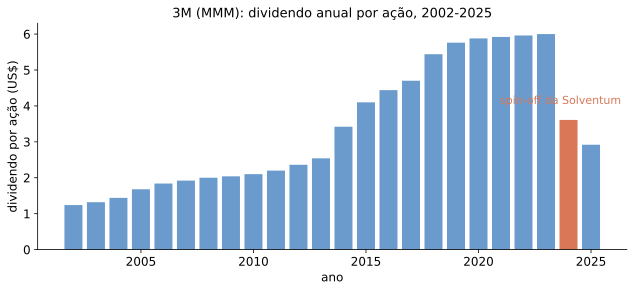
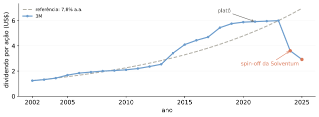

Títulos de dívida: fluxos prometidos, contratuais.
\[P = \sum_{t=1}^{T} \frac{CF_t}{(1+r_t)^t}\]
Ações: fluxos residuais, incertos — o que sobra depois de pagar credores.
A pergunta de hoje: como descontar esse fluxo residual?
O valor da ação deve refletir o fluxo de caixa descontado pago aos acionistas.
Se o valor da ação é o valor presente dos dividendos,
como descontá-los?
| Preferenciais (PN) | Ordinárias (ON) | |
|---|---|---|
| Voto na assembleia | não | sim |
| Prioridade em dividendos | sim | não |
| Tag along | em geral, não | 80% do valor pago ao controlador |
PN ganha voto se o dividendo obrigatório não for pago por 3 anos seguidos. Tag along de ON vem da Lei das S.A.s.
Investidor pretende reter a ação por um ano, entre \(t=0\) e \(t=1\).
Para o investidor ser indiferente entre reter e vender a ação hoje,
\[P_0\left(1+r_E\right) = D_1 + P_1\]
O preço hoje é o valor presente do dividendo mais o preço de revenda.
Rearrumando a condição de indiferença,
\[r_E = \underbrace{\frac{D_1}{P_0}}_{\text{retorno de dividendo}} \;+\; \underbrace{\frac{P_1-P_0}{P_0}}_{\text{taxa de ganho de capital}}\]
A soma das duas parcelas é o retorno total da ação.
Qual o máximo que você pagaria pela ação hoje? Qual seria a rentabilidade em dividendos e a taxa de ganho de capital, a esse preço?
\[P_0 = \frac{D_1+P_1}{1+r_E} = \frac{1{,}92+85}{1{,}11} = \text{US\$ }78{,}31\]
| Componente | Valor |
|---|---|
| Retorno de dividendo | 2,45% |
| Taxa de ganho de capital | 8,55% |
| Retorno total | 11,00% |
Segurando a ação por \(N\) anos,
\[P_0 = \frac{Div_1}{1+r_E} + \frac{Div_2}{(1+r_E)^2} + \cdots + \frac{Div_N}{(1+r_E)^N} + \frac{P_N}{(1+r_E)^N}\]
Preço hoje = VP dos dividendos recebidos até \(N\) + VP do preço de revenda em \(N\).
Deixando \(N \to \infty\),
\[P_0 = \sum_{t=1}^{\infty} \frac{Div_t}{(1+r_E)^t} + \lim_{t\to\infty} \frac{P_t}{(1+r_E)^t}\]
Impondo a condição de não-bolha \(\lim_{t\to\infty} P_t/(1+r_E)^t = 0\),
\[P_0 = \sum_{t=1}^{\infty} \frac{Div_t}{(1+r_E)^t}\]

Fonte: yfinance, histórico de dividendos declarados da 3M.
Um caso particularmente simples — e útil na prática: dividendos crescem à taxa \(g<r_E\),
\[Div_t = Div_1 (1+g)^{t-1}\]
Analogamente à perpetuidade crescente,
\[P_0 = \frac{Div_1}{r_E-g}\]
Da fórmula de crescimento constante,
\[r_E = \underbrace{\frac{Div_1}{P_0}}_{\text{ret. div. em } t=1} + \, g\]
Observando preço, dividendo esperado e crescimento, obtemos o custo de capital implícito pelo mercado.

Pequenos erros na estimativa de \(g\) geram grandes erros de preço — sobretudo perto de \(r_E\).
\(P_N\) combina o valor de todos os dividendos futuros que crescem a \(g\) a partir de \(N+1\).
| \(t=1\) | \(t=2\) | \(t=3\) | \(t>3\) | |
|---|---|---|---|---|
| Dividendo | 2,0 | 2,5 | 3,0 | cresce a 5% a.a. |
Custo de capital acionário: \(r_E = 12\%\). Qual \(P_0\)?
Depois de \(t=3\), dividendos crescem a taxa constante — aplicamos a fórmula de Gordon a partir daí:
\[P_3 = \frac{Div_4}{r_E-g} = \frac{3{,}0\left(1{,}05\right)}{0{,}12-0{,}05} = 45\]
\[P_0 = \frac{2}{1{,}12}+\frac{2{,}5}{1{,}12^{2}}+\frac{3{,}0}{1{,}12^{3}}+\frac{1}{1{,}12^{3}}\times 45 = 37{,}94\]
\(P_3\) entra descontado junto do último dividendo explícito, em \(t=3\).
O modelo de desconto de dividendos depende de boas estimativas de:
Aplicações práticas usam diversas aproximações e hipóteses — voltaremos ao assunto.
Além disso: recompras de ações também remuneram acionistas.
Até aqui,
\[P_0 = PV\left(\text{Div. por ação}\right)\]
Quando recompras são importantes, alternativa:
\[P_0 = \frac{PV\left(\text{Div. futuros e valor gasto em recompras}\right)}{\text{ações fora de tesouraria}}\]
Valor gasto com recompras se parece com um dividendo — mas pode ter tratamento fiscal diferente. Voltaremos ao tema na segunda metade do curso.